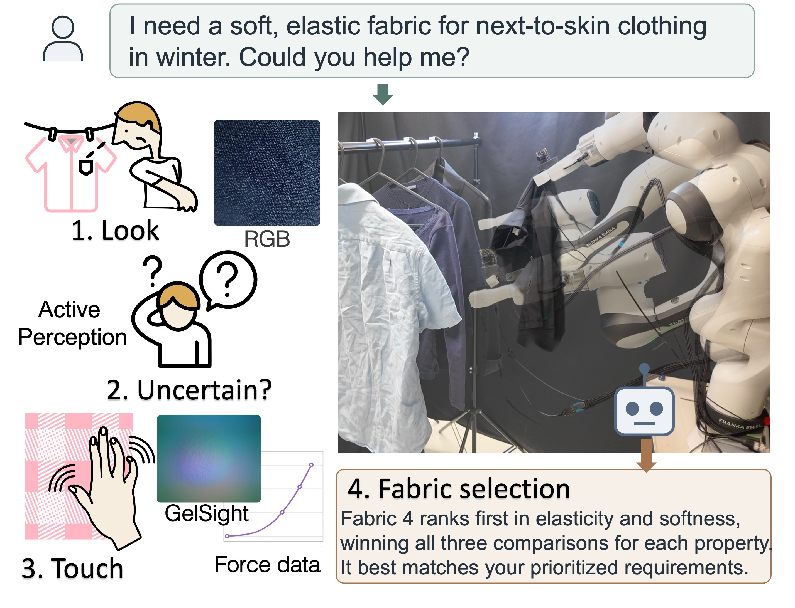
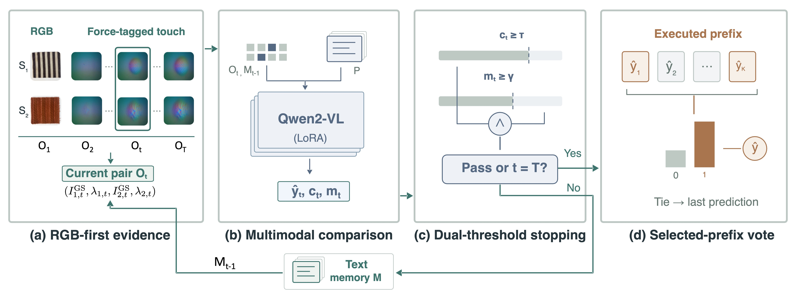
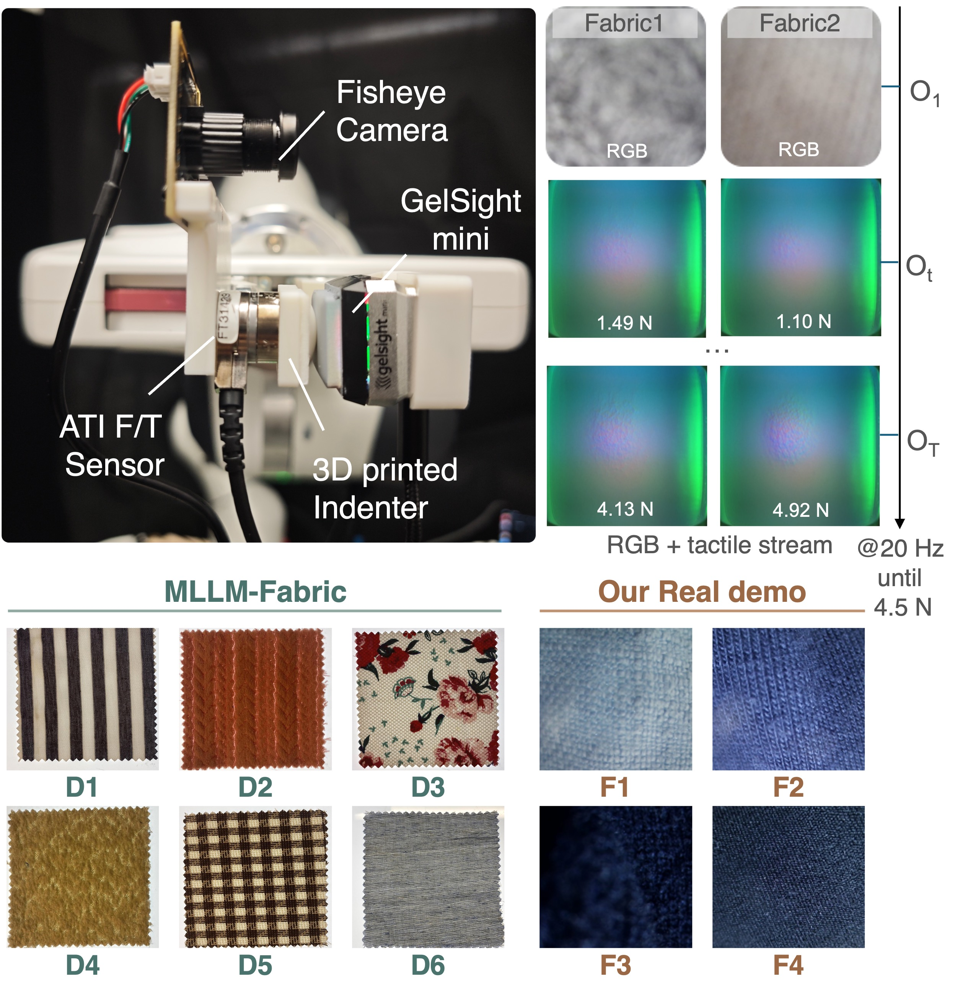

01 · Compare
Begin with RGB images and a query about elasticity, thickness, texture, or softness.
Active visuo-tactile perception
1 King’s College London 2 University of York 3 Imperial College London
* Equal contribution · Correspondence: Zhuo Chen
AVT-Fabric compares fabrics from RGB images, selectively processes force-tagged tactile observations, and turns property comparisons into robotic fabric recommendations.

Main benchmark: held-out questions about seen fabrics, using Qwen2-VL-7B. Physical observations are acquired before inference; latency excludes acquisition and robot motion.
Robotic fabric comparison needs to actively combine visual appearance and tactile cues. Here, we present AVT-Fabric, an RGB-first framework that allocates tactile evidence according to the difficulty of each comparison. A dual-scale gate evaluates answer-token confidence and raw logit separation to determine whether another force-tagged GelSight observation is needed. Compact textual memory preserves the executed history, and majority voting consolidates the selected predictions.
On 400 held-out comparisons, AVT-Fabric achieves 98.0% accuracy with a compact 7B Multimodal Large Language Model (MLLM), surpassing the 94.0% reported by the 90B MLLM-Fabric baseline by 4.0 percentage points while processing only 1.60 of five available stages on average. It improves on matched passive inference by 9.25 percentage points and reduces model-side latency by 61.8%, while also improving on RGB-only accuracy. Experiments with four additional MLLM backbones assess the framework’s generalizability, accuracy, and efficiency. Deployed on a real robotic system, it achieves 78.1% pairwise ranking accuracy and correct fabric selection in seven of eight application scenarios.
See the sensing setup, fabric comparison, and robotic selection in action.
1080p · 2 min 44 sec · Download video (MP4, 18.4 MB)

Begin with RGB images and a query about elasticity, thickness, texture, or softness.
Continue through force-ordered tactile pairs when confidence or logit separation is insufficient. Textual memory carries earlier predictions forward.
Vote over the executed predictions, resolving ties with the latest prediction, then rank fabrics for the request.
Matched Qwen2-VL-7B evaluation on 400 held-out comparisons.
| Inference policy | Accuracy | Mean stages | Time / pair |
|---|---|---|---|
| RGB only | 95.50% | 1.00 | 6.38 s |
| Passive voting | 88.75% | 5.00 | 23.46 s |
| AVT-Fabric | 98.00% | 1.60 | 8.95 s |
Time measures model-side inference, excluding physical data acquisition. See the paper for multi-seed results, additional backbones, and fine-grained and unseen-fabric evaluations.
A Franka Emika Panda integrates an RGB camera, GelSight Mini, and force–torque sensing. Acquired observations support pairwise comparison and garment selection across eight application scenarios, with 78.1% mean pairwise ranking accuracy and 7 of 8 correct final selections.

@misc{gao2026avtfabric,
title = {AVT-Fabric: Active Visuo-Tactile Perception via
Adaptive Evidence Selection for Efficient
Robotic Fabric Comparison},
author = {Gao, Chang and Chen, Zhuo and Xia, Suhang and
Zhu, Jihong and Deng, Jiankang and Luo, Shan},
year = {2026},
note = {Manuscript}
}